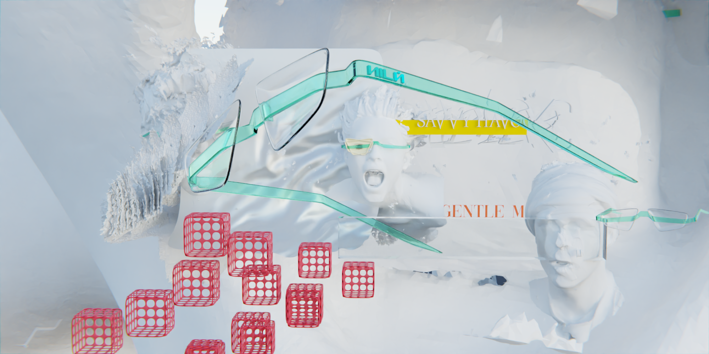
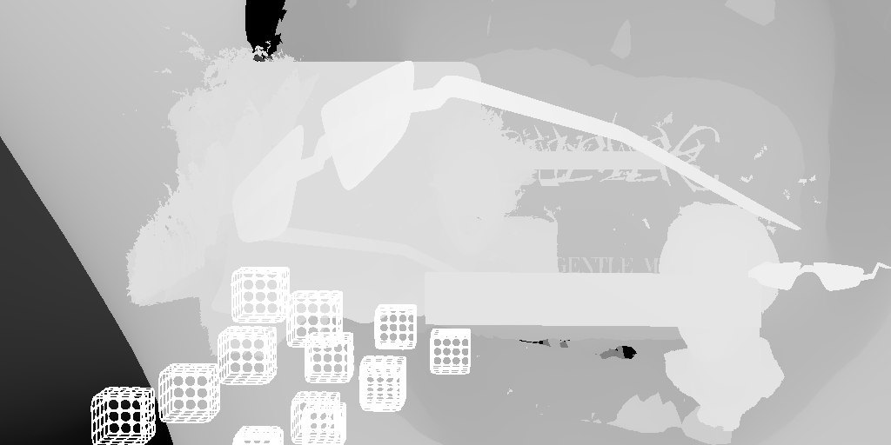
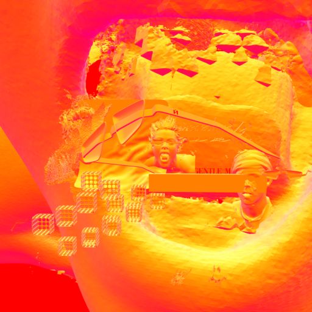
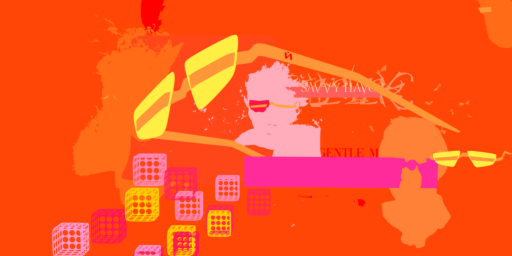
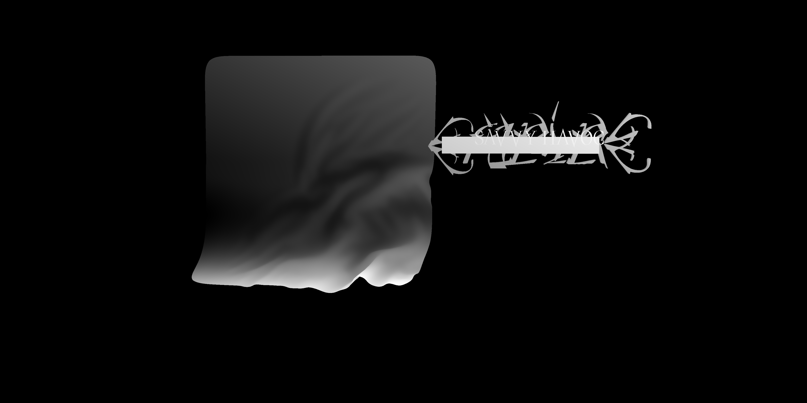
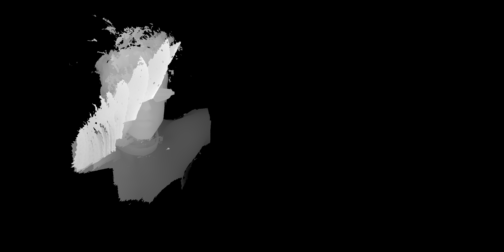

Layer Break
Gentle Monster SG product render decomposed into its technical layers — depth, geometry normals, object-ID masks, and individual Blender collection outputs. Each layer feeds the depth-to-image pipeline to create magazine-grade editorial scenes.
Render Decomposition




Depth Map
Normals
Object IDs

Collection — 4000×2000

Felix 1 — 4000×2000
Depth Map
→
ControlNet Depth SDXL
→
Editorial Output


Technique
Scene
gentle monster.blend — 39 objects, 21 meshes, 8 collections, 3 cameras, 0 lights (emissive materials only). Camera.001 active: 50mm perspective at (3.2, −130, 1.1).
Render Layers
Single View Layer. 8 sub-collections under "all1" root — Collection (6 meshes), Felix 1 (1 sculpt), Felix 2 (1 sculpt + instance), Leoni (5 objects), Instances (volume clouds + smoke), plus "faces" and "grund" (cameras).
Depth Map Extraction
Blender 5.1 compositor: Z-Pass → Normalize node → Invert → FileOutput (OPEN_EXR_MULTILAYER). EXR converted to 16-bit PNG via OpenEXR + Pillow. Scene had FFMPEG animation format — output bypassed via FileOutput compositor node (scene-level format override not possible in Blender 5.1).
Full Pipeline
Blender 5.1 · Cycles 128 samples → Z-Pass → Normalize → Invert → FileOutput (EXR) → OpenEXR+Pillow → 16-bit PNG → ComfyUI /upload/image → ControlNet Depth SDXL · 0.85 → KSampler (dpmpp_2m, karras, CFG 7.0, 25 steps) → 1024×1024 latent output. MPS generation: ~2.5 min each. 2:1 depth map mapped to SDXL square latent space by ControlNet internally.
Object-ID Pass
All 21 meshes replaced with random-color Emission shaders (seed 42). EEVEE render at 512×256 (2:1). Each surface gets a unique RGB ID — useful for per-object masking in compositing or segmentation.
Normal Map Pass
World-space normals remapped via Vector Math (MULTIPLY_ADD: ×0.5 + 0.5) — encoding XYZ ∈ [−1,1] as RGB ∈ [0,1]. EEVEE at 512×256 (2:1). Emission shader bypasses lighting. Useful for relighting passes.
Collection Isolation
Each Blender collection rendered individually by disabling all others via
view_layer.layer_collection.children[].exclude = True. Full depth pipeline (compositor setup, 64 samples Cycles) applied to each. Empty collections (Collection 2, Collection 5) produce minimal depth output.Generation Specs
Sci-Fi
strength: 0.85 · steps: 25 · CFG: 7.0
sampler: dpmpp_2m · scheduler: karras
sampler: dpmpp_2m · scheduler: karras
Bubble Bath
strength: 0.85 · steps: 25 · CFG: 7.0
sampler: dpmpp_2m · scheduler: karras
sampler: dpmpp_2m · scheduler: karras
Jungle Monster
strength: 0.90 · steps: 30 · CFG: 7.0
sampler: dpmpp_2m · scheduler: karras
sampler: dpmpp_2m · scheduler: karras
Hardware
Apple Silicon MPS · 32 GB RAM
SDXL Base 1.0 (6.5 GB) + ControlNet Depth SDXL (2.3 GB)
SDXL Base 1.0 (6.5 GB) + ControlNet Depth SDXL (2.3 GB)